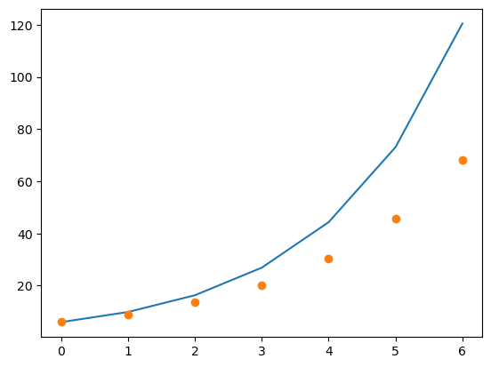

import numpy as np
import plotly.graph_objects as go
import scipy.misc
import scipy.integrate 6 Intro to ODEs

Name: [Type Your Name Here]
#Week 6 Participation
To begin all assignments (whether participation or homework), please save a copy of this notebook to your Google Drive by clicking File -> Save a copy in Drive
Practice
Describe the plot of the function that would model the following scenario,
A drug is eliminated from the body via natural metabolism. Assume that there is some initial amount of drug in the body. What does the function modeling the amount of drug in the system look like over time?
Practice
Consider the differential equation \(x' = 3x\) with an initial condition \(x(0)=4.\) Which of the following functions is a solution to this differential equation, and what is the value of the constant in the function?
- \(x(t) = C \sin(3t)\)
- \(x(t) = C e^{3t}\)
- $x(t) = C t^3 $
- \(x(t) = \sin(3t) + C\)
- \(x(t) = e^{3t} + C\)
For the one that is the solution, please type your solution below.
6.1 Separation of Variables
Practice
Solve the differential equation \(x' = 2x + 12\) with \(x(0)=2\) using separation of variables.
Please type your answer below.
Substitute your solution into the differential equation and verify that it solves it.
ANS:
Practice
Solve the differential equation \[ \frac{dx}{dt} = x \sin(t) \]
with \(x(0) = 1\) using separation of variables.
Please type your answer below. Substitute your solution into the differential equation and verify that it solves it.
ANS:
6.2 Euler’s Method
We want to approximate a solution to \(x'(t) = f(t,x(t))\).
Recall that \[ x'(t) = \frac{x(t+h) - x(t)}{h} + \mathcal{O}(h) \]
so the differential equation \(x'(t) = f(x(t),t)\) becomes
\[ \frac{x(t+h) - x(t)}{h} \approx f(x(t),t). \]
Rewriting as a difference equation, letting \(x_{n+1} = x(t_n+h)\) and \(x_n = x(t_n)\), we get
\[ x_{n+1} = x_n + h f(x_n, t_n) \]
Practice
Consider the differential equation \(x' = 0.5x\) with \(x(0)=6\).
Complete the following table using Euler’s method, with \(h=1\).
You can either write code to do this or do it by hand.
| t | 0 | 1 | 2 | 3 | 4 | 5 | 6 |
|---|---|---|---|---|---|---|---|
| Approximation of x(t) | 6 | - | - | - | - | - | - |
# if time permits, create a plot with your analytical
# solution and the approximate solution
import numpy as np
t = np.array([0,1,2,3,4,5,6])
approx = [6, 9, 13.5, 20.25, 30.375, 45.5625, 68.34375]
f = lambda x: 6 * np.exp(0.5*x)
actual = f(t)import matplotlib.pyplot as plt
plt.plot(t,actual)
plt.plot(t, approx, 'o')